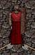
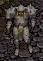
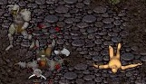
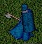
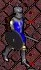
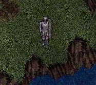

Welcome traveler. Please, make thineself comfortable, and allow me to tell my tale.
And blood indeed did we find; not only that of the feral orc, but much of our own blood gave the ground at our feet a ruddy look. We spent a short while in this endeavor, and none of our rank did fall to the foul orc. Indeed, we did profit from our efforts, taking what minor valuables were on the reeking corpses of these beasts. And we were fortunate, for in our quest against the heathen orc, we met up with a great warrior who went by the name of Darklin, one who did slay the mighty orc captains without fear, while I and my party did take flight in their presence, for we were yet no match for their mighty claws and fearless attack.
Clad in an impressive array of red and black armor, this man struck fear into our small party; yet when he offered his assistance, especially with his offer to slay the mighty orc captains that frequented the area, my small band accepted his offer. After I overcame my initial fear of one so greatly surpassing my own strength, I relaxed slightly, and threw my all into the never-ending endeavor of slaying the less fearsome orcs. With the aid and protection of this Darklin, we quickly grew in strength, and in courage. After some time, the great warrior did depart, leaving us to fend for ourselves. We returned to the town to resupply for the battles sure to come.
Returning from our restoration in Britain, our foursome encountered our first orc captain in the woods. Being of strong will and foolish courage, we laid into him, and were victorious, though the foul creature did inflict grievous wounds upon us. I attempted to heal myself and my comrades, but my touch with the powers of magic was yet weak, and I was of little use. Regardless, we set off for the orc camps, in our wounded state, to seek further battle.
Upon reaching the camp, we set upon other orc captains, always attacking in a group. There were other hardy adventurers in the camp along with ourselves, and they freely offered healing before departing. One of those adventurers stood extremely still, however, much as a statue-- his name was Praecor Lolth. I had heard this name when walking in the town, on the lips of impressive warriors. I had placed his name among the names of men to respect. As time went by, as our axes became saturated with gore, still he did not move.
Yet in a moment of relaxation, a vile orc captain did sneak up behind the honorable Praecor Lolth and made ready to attack! I could not bear the thought of this fine warrior being slain by an orc captain while in such a state, and I took off running, in full armor, to come to his aid. I and another one of my companions set into this captain, in the hopes that we could take him. It was indeed a fierce battle; the captain bled from many wounds, yet I bled from still more. When it seemed as if a single blow would end the battle, it did-- only 'twas I who was on the receiving end. My world went black.
I regained consciousness in an ornate temple, naked, yet with my backpack intact. I gave a silent prayer of thanks to the traveler that brought my body to this place of worship, and whose only payment was the armor on my back. I felt weaker, and humbled from my experience with the foul orc captain. As despondency began to set in upon me, a knight in full regalia nearby spoke unto me. Again, my fear of powers far greater than mine set in, but in my helpless state, there was little I could do.
"Do you need armor?" was his simple question. Not one to betray my sense of honesty, though it hurt my pride, I responded in the affirmative. He quickly replied, almost eagerly: "Then follow me and I will slay thee a guard." Amazed at this knight's audacity and odd sense of honor, I followed. I had nothing left to lose. As I learned, he went by the name Crux Ansata, yet another brave warrior who I had heard tales from the tongues of other noble men.
And indeed, he did slay me a guard; nay, he did slay two, so as to keep an extra set for the next unfortunate adventurer. Thanking this powerful knight many times, and once again in the clothing of the creed of men I sought to be a part of, I anticipated re-joining my fellow adventurers. But alas, I could not find them, and due to the horrible blows that were rained upon me, I could not even recall their names. To this day, the memory of their faces without name does unceasingly haunt me. Only the faces of the men who offered me protection and kindness kept their purchase in my head, and with their memory, I resolved myself to become one like them, able to help the less fortunate and protect those who cannot protect themselves.
And thus, without any companions nor hope for any better circumstance, I set off into the wild once more, to seek my fate and my betterment. In those journeys, I met other adventurers, and became strong with continuous combat; I even joined the ranks of those men whom I so admired in my more unfortunate past, but that, as they say, is another story...
This is my story. Please ask if you wanna use it again somewhere. These pics aren't mine; ask Chandar if you wanna use them. You there! Yeah, you! Be cool!